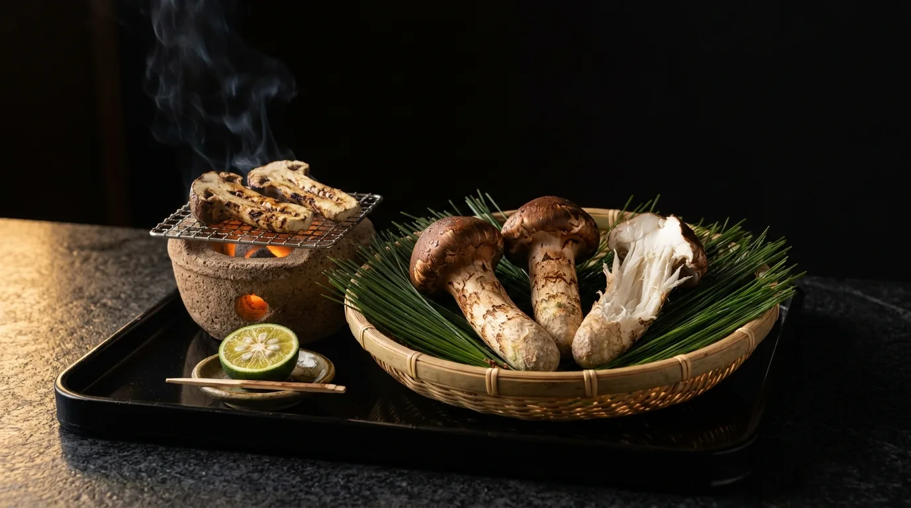
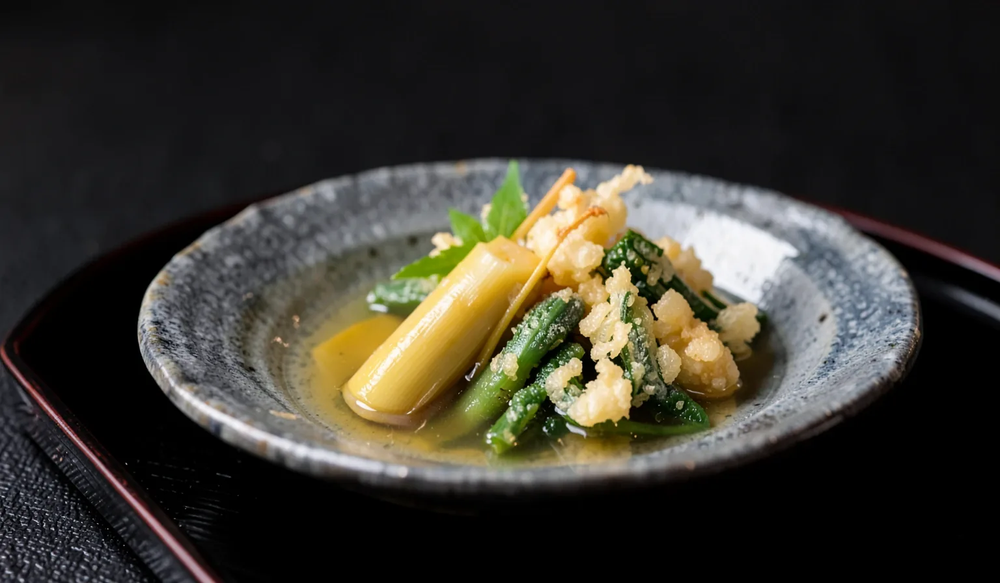
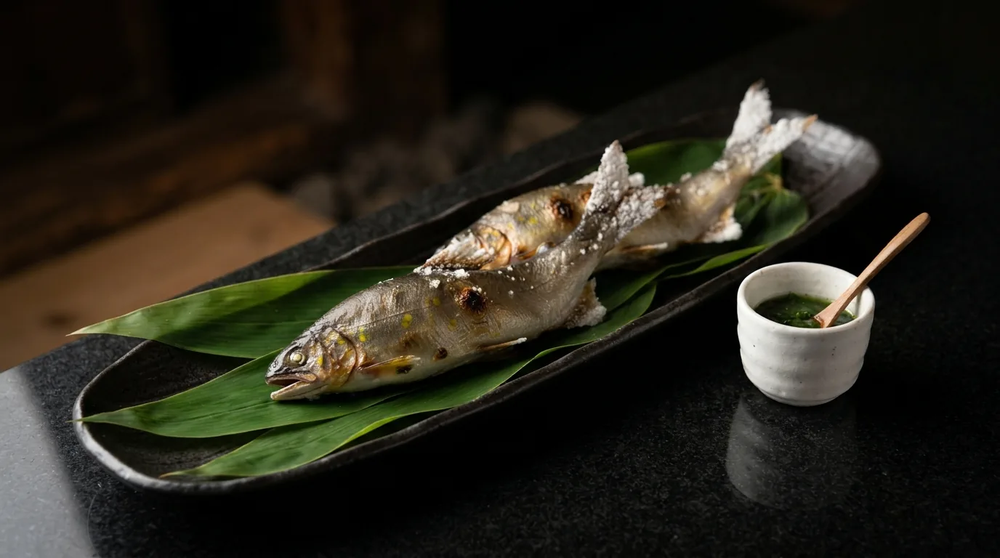
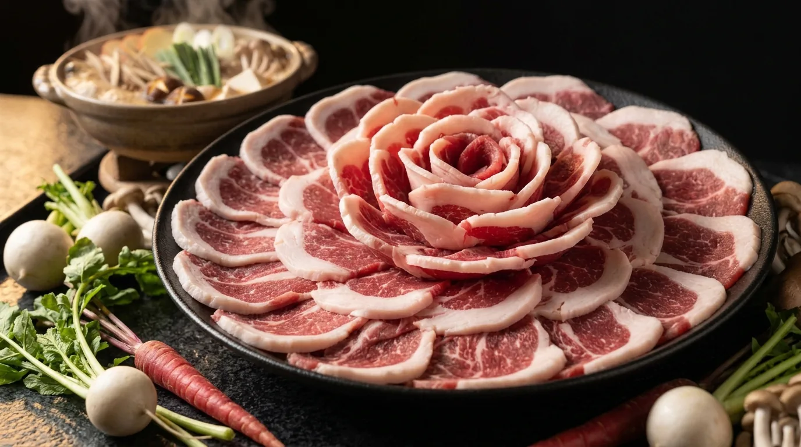
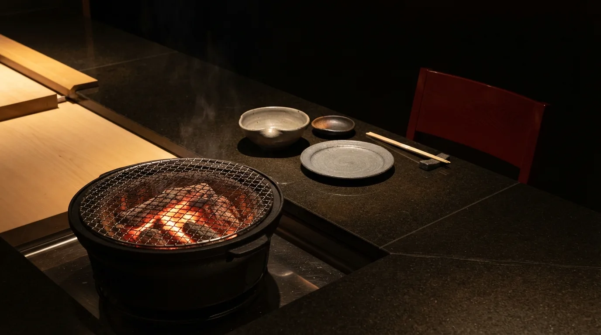

COURSE
山の会席
海の幸は、ほとんどお出ししません。谷の川魚、森のきのこ、畑の野菜、近くの牧場の黒毛和牛。半日で行ける範囲で採れたものだけで、九品の献立を組みます。
献立は月ごとに替わり、その月の朝の仕入れで少しずつ変わります。
- 夕食
- 18:00〜／19:30〜 食事処の個室で
- 朝食
- 7:30〜9:00 土鍋ご飯の和朝食


CUISINE
COURSE
海の幸は、ほとんどお出ししません。谷の川魚、森のきのこ、畑の野菜、近くの牧場の黒毛和牛。半日で行ける範囲で採れたものだけで、九品の献立を組みます。
献立は月ごとに替わり、その月の朝の仕入れで少しずつ変わります。

SPRING ／ 3–5月
夜明けに裏の竹林で掘った筍を、その日のうちに一番出汁で。たらの芽、こごみは揚げて、塩だけで。

SUMMER ／ 6–8月
宿の前を流れる川の天然鮎を、炭火でじっくり塩焼きに。蓼の葉をすった蓼酢を添えて。
AUTUMN ／ 9–11月
裂いて七輪で炙り、すだちをひと搾り。土瓶蒸しと、炊きたての松茸ご飯でも。

WINTER ／ 12–2月
地元の猟師が冬の山で獲った猪を、牡丹の花に盛って。白味噌と赤味噌を合わせた鍋で、さっと煮て。
CRAFT
器は、谷の奥に窯を持つ陶芸家と、隣町の塗師に頼んだものです。焼き物はすべて炭火。お部屋ごとに個室の食事処で、最後のご飯は土鍋で炊いてお出しします。

近くの牧場の黒毛和牛を、朴葉味噌の上で炭火焼きに。
4,800円
炙った岩魚に熱燗を注いで。冬の夜に。
2,200円
秋のみ。ご予約時にお申しつけください。
3,600円
料金は税込です。仕入れにより、献立の内容が変わることがあります。